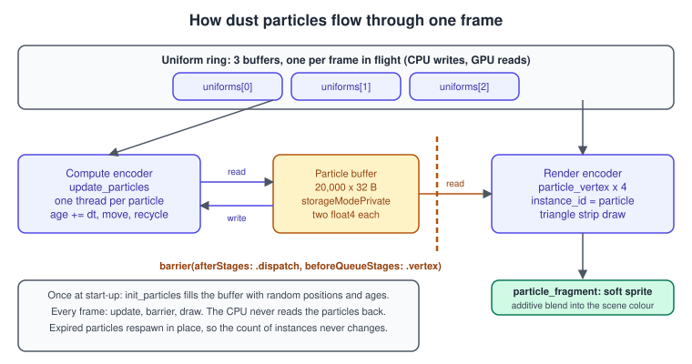
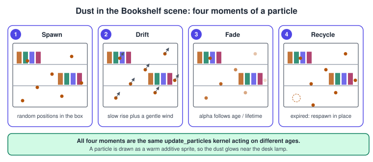
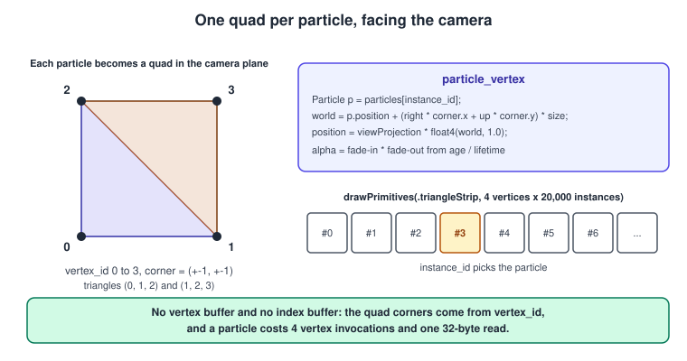

Particles
|
This content was generated with the assistance of AI and should be verified against the official documentation before being relied on in production. |
Particles are the cheapest way to make a scene feel alive: sparks, smoke, rain, and, in the Metal Bookshelf, the dust that floats in the beam of the desk lamp. A thousand particles can be updated on a CPU; a million cannot, and even a few thousand cost the CPU time you want for the game. The GPU is the natural home of a particle system because every particle is independent: one thread per particle, one buffer, no communication. This page builds the dust system of the Bookshelf as a compute pass that updates a buffer of particles and a render pass that draws them as instanced quads, explains every decision in it and shows how to scale it.
The facts were checked in November 2026. The code uses Metal 4 (the MTL4 types, available from the 26 OSes) and MSL 4.x, builds with Xcode 27 and runs on every Metal 4 device (A14, M1 or later, and Apple Vision Pro); a Metal 3
version of the encoding is shown after the main example. This is stage 8 of the running example, "post-processing and particles (dust)": the shelf is already lit by many lights
(Deferred and Tile Shading) and the dust is drawn on top, with blending, in the same render pass after the opaque geometry.
The compute basics used here are in Compute Kernels and the ordering of the two passes in
Synchronization and Barriers; instancing in OpenGL is covered in
Instancing and Indirect Drawing, and the general theory of blending in
Transparency, Blending and Post-Processing.
The design of the dust

The dust is 20,000 particles in a box around the shelf (4 by 3 by 4 metres). Each particle has a position, a velocity, an age and a lifetime. Everything is on the GPU:
-
The particle buffer is
storageModePrivate: only the GPU reads and writes it, so the CPU can never race with the GPU on it and Metal can place it in the most efficient memory. It is filled once by a compute kernel (init_particles) and then only updated by another (update_particles). -
A small uniform structure per frame carries what changes: camera vectors and view-projection matrix, the time step, the time, the particle size and the box. The CPU writes it every frame, so there are three copies (a ring), one per frame in flight; otherwise the CPU would overwrite uniforms that the GPU is still reading for the previous frame. Metal 3 can use
setBytesinstead (up to 4 KB). -
The update is a compute dispatch with one thread per particle. The draw is one instanced draw: four vertices (a quad as a triangle strip) times 20,000 instances.
-
A barrier between them tells the GPU that the vertex stage of the draw reads what the dispatch wrote.
The particle layout
// ParticleTypes.h: shared by Swift (through the bridging header) and Metal.
#ifndef ParticleTypes_h
#define ParticleTypes_h
#include <simd/simd.h>
typedef enum {
ParticleBufferParticles = 0,
ParticleBufferUniforms = 1
} ParticleBufferIndex;
typedef struct {
simd_float4 positionAge; // xyz = world position (m), w = age (s)
simd_float4 velocityLifetime; // xyz = velocity (m/s), w = lifetime (s)
} Particle; // 32 bytes: two 16-byte vectors, no hidden padding
typedef struct {
simd_float4x4 viewProjection;
simd_float4 cameraRight; // xyz = camera right axis in world space
simd_float4 cameraUp; // xyz = camera up axis in world space
simd_float4 volumeMin; // xyz = lower corner of the dust box
simd_float4 volumeMax; // xyz = upper corner of the dust box
float deltaTime; // seconds since the previous frame
float time; // seconds since start (drives the wind)
float particleSize; // quad half-size in metres
uint32_t particleCount;
} ParticleUniforms;
#endifWhy two float4 values and not four separate fields: a simd_float3 takes 16 bytes in C, Swift and MSL, so simd_float3 position; float age; would leave age in a new 16-byte slot and the structure would be 48 bytes,
not 32, with padding nobody asked for. Packing the extra float into the fourth component of a vector keeps the structure at exactly two 16-byte vectors and the same stride (MemoryLayout<Particle>.stride) on both sides.
If you prefer named fields, use packed_float3 in MSL and MTLPackedFloat3 in Swift and compute the offsets with MemoryLayout.offset(of:).
Life cycle

A particle is born with an age of zero and a lifetime between 4 and 10 seconds. Each step it ages, moves, and fades; when it is older than its lifetime it is recycled in place: the same thread, in the same frame, writes a brand-new particle into the same slot. The set of 20,000 slots never changes in size, which keeps the draw call constant; the cost is that dead particles never exist, which is exactly right for ambient dust and wrong for bursts of sparks that stop (see the scaling section for that case).
The motion is explicit Euler integration with a slow upward drift and a small wind that depends on position and time:
\[ p_{ n + 1 } = p_n + ( v + w( p_n, t ) ) \, \Delta t \qquad w( p, t ) = 0.04 \, ( \sin( 1.7 p_y + 0.6 t ),\; 0,\; \cos( 1.3 p_x + 0.5 t ) ) \]
Euler integration is fine for a slow ambient effect and drifts for anything with strong forces; use a semi-implicit step (update the velocity first, then the position) for gravity or springs.
Randomness on a GPU has no global generator: each thread must derive its own numbers. The kernel uses a PCG-style integer hash of the particle index combined with a salt, and calls it repeatedly (random01) to get a stream. The
salt changes every frame (the bits of the time value), so a recycled particle does not reappear at the same spot that the previous recycled particle at the same index used.
The shaders
#include <metal_stdlib>
using namespace metal;
#include "ParticleTypes.h"
// PCG hash: a cheap, good-enough random number generator for one thread.
static uint pcg(uint v) {
uint state = v * 747796405u + 2891336453u;
uint word = ((state >> ((state >> 28u) + 4u)) ^ state) * 277803737u;
return (word >> 22u) ^ word;
}
static float random01(thread uint &seed) {
seed = pcg(seed);
return float(seed) * (1.0 / 4294967296.0);
}
// Spawns particle `index` somewhere in the dust box with a fresh lifetime.
static Particle spawn(uint index, uint salt, constant ParticleUniforms &u, float initialAge) {
uint seed = pcg(index ^ pcg(salt));
float3 lo = u.volumeMin.xyz, hi = u.volumeMax.xyz;
Particle p;
p.positionAge = float4(mix(lo, hi, float3(random01(seed), random01(seed), random01(seed))), initialAge);
p.velocityLifetime = float4(0.0, 0.02 + 0.03 * random01(seed), 0.0, 4.0 + 6.0 * random01(seed));
return p;
}
kernel void init_particles(device Particle *particles [[buffer(ParticleBufferParticles)]],
constant ParticleUniforms &u [[buffer(ParticleBufferUniforms)]],
uint i [[thread_position_in_grid]])
{
if (i >= u.particleCount) { return; }
Particle p = spawn(i, 1u, u, 0.0);
p.positionAge.w = p.velocityLifetime.w * float(pcg(i * 31u + 7u)) * (1.0 / 4294967296.0); // desynchronise ages
particles[i] = p;
}
kernel void update_particles(device Particle *particles [[buffer(ParticleBufferParticles)]],
constant ParticleUniforms &u [[buffer(ParticleBufferUniforms)]],
uint i [[thread_position_in_grid]])
{
if (i >= u.particleCount) { return; } // the grid may be rounded up to a multiple of the group size
Particle p = particles[i];
p.positionAge.w += u.deltaTime;
if (p.positionAge.w >= p.velocityLifetime.w) { // expired: recycle in place
uint salt = as_type<uint>(u.time) ^ 0x9E3779B9u;
p = spawn(i, salt, u, 0.0);
} else {
float3 pos = p.positionAge.xyz;
float3 wind = 0.04 * float3(sin(pos.y * 1.7 + u.time * 0.6), 0.0, cos(pos.x * 1.3 + u.time * 0.5));
p.positionAge.xyz = pos + (p.velocityLifetime.xyz + wind) * u.deltaTime;
}
particles[i] = p;
}
struct ParticleVertexOut {
float4 position [[position]];
float2 corner; // -1...1 across the quad
float alpha;
};
vertex ParticleVertexOut particle_vertex(uint vertexID [[vertex_id]],
uint instanceID [[instance_id]],
device const Particle *particles [[buffer(ParticleBufferParticles)]],
constant ParticleUniforms &u [[buffer(ParticleBufferUniforms)]])
{
// Triangle strip: (-1,-1) (1,-1) (-1,1) (1,1).
float2 corner = float2((vertexID & 1) ? 1.0 : -1.0, (vertexID & 2) ? 1.0 : -1.0);
Particle p = particles[instanceID];
float3 world = p.positionAge.xyz + (u.cameraRight.xyz * corner.x + u.cameraUp.xyz * corner.y) * u.particleSize;
float t = p.positionAge.w / p.velocityLifetime.w; // 0 at birth, 1 at death
ParticleVertexOut out;
out.position = u.viewProjection * float4(world, 1.0);
out.corner = corner;
out.alpha = smoothstep(0.0, 0.2, t) * smoothstep(1.0, 0.8, t); // fade in and out
return out;
}
fragment half4 particle_fragment(ParticleVertexOut in [[stage_in]])
{
float r = length(in.corner);
float soft = smoothstep(1.0, 0.0, r); // soft round sprite
float a = soft * soft * in.alpha * 0.6;
return half4(half3(1.0, 0.92, 0.75) * half(a), half(a)); // warm lamp light, premultiplied
}Points in the shaders:
-
update_particlesguards withif (i >= u.particleCount) return;. WithdispatchThreadsno thread exists beyond the grid, but the guard also protects the case where the buffer is larger than the active count. -
A thread reads its particle once, changes it in registers and writes it back once: 32 bytes in and 32 out per particle. Memory bandwidth, not arithmetic, is the cost of a particle update.
-
particle_vertexbuilds the quad corner fromvertex_id(0 to 3, the corners of a triangle strip) and the particle frominstance_id. It addscameraRightandcameraUpscaled by the corner and the size, so the quad always faces the camera: a billboard. -
The fade is a product of two smooth steps of the normalised age: in over the first 20 percent of life, out over the last 20.
-
particle_fragmentis a soft round sprite:smoothstepof the distance to the quad centre, squared for a gentler falloff, times the vertex alpha. It returns a premultiplied colour: the colour multiplied by the alpha, with the alpha in the fourth component, which matches the blend factors set on the pipeline.

Drawing: instancing, billboards and blending
Instancing draws the same small mesh many times with a different instance_id, so a particle needs no vertices of its own: the quad’s four corners come from vertex_id, the particle from instance_id. The call is
encoder.drawPrimitives(primitiveType: .triangleStrip, vertexStart: 0, vertexCount: 4, instanceCount: count)Source: MTL4RenderCommandEncoder
and runs the vertex shader 4 times for each particle. There are alternatives and trade-offs:
| Technique | How | Trade-off |
|---|---|---|
Instanced quads (used here) |
4 vertices per instance, billboard in the vertex shader |
flexible: any size, rotation, texture; vertex cost four times higher than a point |
Point primitives |
|
one vertex per particle; the size is in pixels and limited (the Feature Set Tables list a maximum point size of 511); points near the screen edge are clipped by their centre |
Mesh shaders |
an object shader per group of particles and a mesh shader that emits the quads |
fewer vertex invocations and in-GPU culling; see Mesh Shaders |
Indirect draw |
|
the number of alive particles can vary with no CPU involvement; see GPU-Driven Rendering and Indirect Command Buffers |
Blending combines the particle’s colour with the colour already in the attachment. Dust is a glow, so it uses additive blending: the result is the sum of the destination and the premultiplied
source (source factor = one, destination factor = one, operation add). Additive blending has a valuable property for particles: the result does not depend on the order in which particles are drawn,
so there is no sorting. The pipeline descriptor sets it with blendingState = .enabled and the four factors (the Metal 4 colour attachment descriptor MTL4RenderPipelineColorAttachmentDescriptor).
For smoke or anything that darkens, use premultiplied alpha blending (source one, destination oneMinusSourceAlpha) and sort back to front, or use an order-independent technique.
Particles live inside a scene, so they must be hidden behind opaque objects but not hide each other. Draw them after the opaque geometry in the same render pass, with a depth-stencil state whose compare function is .lessEqual and whose
depth write is off (isDepthWriteEnabled = false). In Metal 4 the depth-stencil state is set on the encoder and the pass supplies the depth attachment; the render pipeline descriptor has no depth format.
In the complete example below there is no depth attachment, so the effect is an overlay.
The complete Swift renderer
import Metal
import simd
/// Compute-updated dust particles drawn as camera-facing quads (Metal 4).
final class ParticleSystem {
static let framesInFlight = 3
let count: Int
let particles: any MTLBuffer // private: only the GPU touches it after init
private let uniformBuffers: [any MTLBuffer] // one per frame in flight: the CPU writes them
let residencySet: any MTLResidencySet
private let initPipeline: any MTLComputePipelineState
private let updatePipeline: any MTLComputePipelineState
private let drawPipeline: any MTLRenderPipelineState
private let computeTable: any MTL4ArgumentTable
private let drawTable: any MTL4ArgumentTable
private let threadgroupWidth: Int
private var frame = 0
private(set) var uniforms: ParticleUniforms
init(device: any MTLDevice, library: any MTLLibrary, compiler: any MTL4Compiler,
count: Int, colorFormat: MTLPixelFormat, volume: (min: simd_float3, max: simd_float3)) throws {
self.count = count
particles = device.makeBuffer(length: count * MemoryLayout<Particle>.stride, options: .storageModePrivate)!
particles.label = "Dust particles"
uniformBuffers = (0..<Self.framesInFlight).map {
let b = device.makeBuffer(length: MemoryLayout<ParticleUniforms>.stride, options: .storageModeShared)!
b.label = "Particle uniforms \($0)"
return b
}
uniforms = ParticleUniforms()
uniforms.volumeMin = simd_float4(volume.min, 0)
uniforms.volumeMax = simd_float4(volume.max, 0)
uniforms.particleCount = UInt32(count)
uniforms.particleSize = 0.012
func function(_ name: String) -> MTL4LibraryFunctionDescriptor {
let f = MTL4LibraryFunctionDescriptor(); f.library = library; f.name = name; return f
}
func computePipeline(_ name: String) throws -> any MTLComputePipelineState {
let d = MTL4ComputePipelineDescriptor()
d.computeFunctionDescriptor = function(name)
return try compiler.makeComputePipelineState(descriptor: d, dynamicLinkingDescriptor: nil, compilerTaskOptions: nil)
}
initPipeline = try computePipeline("init_particles")
updatePipeline = try computePipeline("update_particles")
threadgroupWidth = min(256, updatePipeline.maxTotalThreadsPerThreadgroup)
let d = MTL4RenderPipelineDescriptor()
d.vertexFunctionDescriptor = function("particle_vertex")
d.fragmentFunctionDescriptor = function("particle_fragment")
let color = d.colorAttachments[0]!
color.pixelFormat = colorFormat
color.blendingState = .enabled // additive blending: order does not matter
color.rgbBlendOperation = .add
color.alphaBlendOperation = .add
color.sourceRGBBlendFactor = .one // the fragment shader returns premultiplied colour
color.sourceAlphaBlendFactor = .one
color.destinationRGBBlendFactor = .one
color.destinationAlphaBlendFactor = .one
drawPipeline = try compiler.makeRenderPipelineState(descriptor: d, dynamicLinkingDescriptor: nil, compilerTaskOptions: nil)
let tableDescriptor = MTL4ArgumentTableDescriptor()
tableDescriptor.maxBufferBindCount = 2
computeTable = try device.makeArgumentTable(descriptor: tableDescriptor)
drawTable = try device.makeArgumentTable(descriptor: tableDescriptor)
for table in [computeTable, drawTable] {
table.setAddress(particles.gpuAddress, index: Int(ParticleBufferParticles.rawValue))
}
residencySet = try device.makeResidencySet(descriptor: MTLResidencySetDescriptor())
residencySet.addAllocation(particles)
residencySet.addAllocations(uniformBuffers)
residencySet.commit()
}
/// Writes this frame's uniforms and returns the buffer address to bind.
private func prepare(deltaTime: Float, time: Float, viewProjection: simd_float4x4,
right: simd_float3, up: simd_float3) -> MTLGPUAddress {
frame = (frame + 1) % Self.framesInFlight
uniforms.deltaTime = deltaTime
uniforms.time = time
uniforms.viewProjection = viewProjection
uniforms.cameraRight = simd_float4(right, 0)
uniforms.cameraUp = simd_float4(up, 0)
uniformBuffers[frame].contents().storeBytes(of: uniforms, as: ParticleUniforms.self)
return uniformBuffers[frame].gpuAddress
}
/// Fills the buffer once. Call it before the first frame, in its own compute encoder.
func encodeInit(into commandBuffer: any MTL4CommandBuffer) {
let address = prepare(deltaTime: 0, time: 0, viewProjection: matrix_identity_float4x4,
right: simd_float3(1, 0, 0), up: simd_float3(0, 1, 0))
computeTable.setAddress(address, index: Int(ParticleBufferUniforms.rawValue))
let encoder = commandBuffer.makeComputeCommandEncoder()!
encoder.label = "Init dust"
encoder.setComputePipelineState(initPipeline)
encoder.setArgumentTable(computeTable)
encoder.dispatchThreads(threadsPerGrid: MTLSize(width: count, height: 1, depth: 1),
threadsPerThreadgroup: MTLSize(width: threadgroupWidth, height: 1, depth: 1))
// The next pass (update or draw) reads what this encoder wrote.
encoder.barrier(afterStages: .dispatch, beforeQueueStages: [.dispatch, .vertex], visibilityOptions: .device)
encoder.endEncoding()
}
/// Moves every particle one step. Encode this BEFORE the render pass that draws them.
func encodeUpdate(into commandBuffer: any MTL4CommandBuffer, deltaTime: Float, time: Float,
viewProjection: simd_float4x4, right: simd_float3, up: simd_float3) {
let address = prepare(deltaTime: deltaTime, time: time, viewProjection: viewProjection, right: right, up: up)
computeTable.setAddress(address, index: Int(ParticleBufferUniforms.rawValue))
drawTable.setAddress(address, index: Int(ParticleBufferUniforms.rawValue))
let encoder = commandBuffer.makeComputeCommandEncoder()!
encoder.label = "Update dust"
encoder.setComputePipelineState(updatePipeline)
encoder.setArgumentTable(computeTable)
encoder.dispatchThreads(threadsPerGrid: MTLSize(width: count, height: 1, depth: 1),
threadsPerThreadgroup: MTLSize(width: threadgroupWidth, height: 1, depth: 1))
// Producer barrier: the vertex stage of later passes waits for these writes.
encoder.barrier(afterStages: .dispatch, beforeQueueStages: [.dispatch, .vertex], visibilityOptions: .device)
encoder.endEncoding()
}
/// Draws the quads inside an existing render pass. The caller must re-bind its own argument table afterwards.
func encodeDraw(into encoder: any MTL4RenderCommandEncoder) {
encoder.setRenderPipelineState(drawPipeline)
encoder.setArgumentTable(drawTable, stages: [.vertex, .fragment])
encoder.drawPrimitives(primitiveType: .triangleStrip, vertexStart: 0, vertexCount: 4, instanceCount: count)
}
}How the pieces fit:
-
initcreates the private particle buffer, three uniform buffers, the compute pipelines (init_particles,update_particles) and the render pipeline with additive blending, two argument tables and one residency set that holds all of the buffers. The residency set is added to the queue by the caller (queue.addResidencySet(system.residencySet)). -
encodeInitruns once, in its own compute encoder, and ends with a producer barrier so that the first update (or draw) sees the filled buffer. -
encodeUpdatewrites this frame’s uniforms into the next buffer of the ring, binds that buffer’s GPU address in both tables, dispatches one thread per particle and ends withbarrier(afterStages: .dispatch, beforeQueueStages: [.dispatch, .vertex], visibilityOptions: .device): later dispatches (the next frame’s update) and later vertex stages (the draw) wait for these writes. -
encodeDrawis called inside the caller’s render encoder, after the opaque geometry. It selects the particle pipeline, binds its own argument table to the vertex and fragment stages and issues the instanced draw. Because that replaces the caller’s table, the caller must set its own table again before drawing anything else. -
The ring:
prepareadvancesframemodulo 3 each call. The same index must not be used by a frame the GPU is still reading; with three frames in flight and a wait on the frame event at the start of each frame (see the frame loop in Synchronization and Barriers) it never is.
Using it in the frame loop, in the order the GPU needs:
// once, at start-up
queue.addResidencySet(particles.residencySet)
particles.encodeInit(into: commandBuffer)
// every frame, after waiting for the allocator of this frame
let dt = min(Float(frameDuration), 1.0 / 30.0) // never let a pause make particles teleport
particles.encodeUpdate(into: commandBuffer, deltaTime: dt, time: elapsed,
viewProjection: camera.viewProjection,
right: camera.right, up: camera.up) // camera basis vectors in world space
let encoder = commandBuffer.makeRenderCommandEncoder(descriptor: pass, options: [])!
// ... opaque geometry with the scene's own argument table ...
particles.encodeDraw(into: encoder) // dust after the opaque pass
// ... set the scene's argument table again if more scene draws follow ...
encoder.endEncoding()Source: MTL4CommandBuffer
A test you can run
The harness below drives the system for 120 frames into an offscreen texture, as a stand-in for the scene’s colour attachment, and counts the lit pixels. Compile the shader from source at run time, so no Xcode project is needed. Put
ParticleTypes.h, Particles.metal, ParticleSystem.swift, Bridging.h and main.swift in one folder and build:
swiftc -O -import-objc-header Bridging.h ParticleSystem.swift main.swift -o particles
MTL_DEBUG_LAYER=1 MTL_SHADER_VALIDATION=1 ./particles .The bridging header is a single line:
#include "ParticleTypes.h"// main.swift: an offscreen test harness for ParticleSystem.
// Build: swiftc -O -import-objc-header Bridging.h ParticleSystem.swift main.swift -o particles
// Run: ./particles . (the argument is the folder that holds ParticleTypes.h and Particles.metal)
import Metal
import simd
let device = MTLCreateSystemDefaultDevice()!
let compiler = try device.makeCompiler(descriptor: MTL4CompilerDescriptor())
let dir = URL(fileURLWithPath: CommandLine.arguments[1])
let header = try String(contentsOf: dir.appendingPathComponent("ParticleTypes.h"), encoding: .utf8)
var body = try String(contentsOf: dir.appendingPathComponent("Particles.metal"), encoding: .utf8)
body = body.replacingOccurrences(of: "#include \"ParticleTypes.h\"", with: header)
let ld = MTL4LibraryDescriptor(); ld.source = body
let library = try compiler.makeLibrary(descriptor: ld)
// One render target stands in for the Bookshelf's scene colour attachment.
let width = 640, height = 480
let system = try ParticleSystem(device: device, library: library, compiler: compiler, count: 20_000,
colorFormat: .rgba16Float, volume: (simd_float3(-2, 0, -2), simd_float3(2, 3, 2)))
let queue = device.makeMTL4CommandQueue()!
let allocator = device.makeCommandAllocator()!
let commandBuffer = device.makeCommandBuffer()!
queue.addResidencySet(system.residencySet)
let td = MTLTextureDescriptor.texture2DDescriptor(pixelFormat: .rgba16Float, width: width, height: height, mipmapped: false)
td.usage = .renderTarget; td.storageMode = .shared
let target = device.makeTexture(descriptor: td)!
let targetResidency = try device.makeResidencySet(descriptor: MTLResidencySetDescriptor())
targetResidency.addAllocation(target)
targetResidency.commit()
queue.addResidencySet(targetResidency)
func perspective(fovY: Float, aspect: Float, near: Float, far: Float) -> simd_float4x4 {
let ys = 1 / tan(fovY * 0.5), xs = ys / aspect, zs = far / (near - far)
return simd_float4x4(columns: (simd_float4(xs, 0, 0, 0), simd_float4(0, ys, 0, 0), simd_float4(0, 0, zs, -1), simd_float4(0, 0, near * zs, 0)))
}
// Camera at (0, 1.5, 6) looking at the box centre: pure translation, so right/up are the world axes.
let view = simd_float4x4(columns: (simd_float4(1,0,0,0), simd_float4(0,1,0,0), simd_float4(0,0,1,0), simd_float4(0,-1.5,-6,1)))
let vp = perspective(fovY: 50 * .pi / 180, aspect: Float(width)/Float(height), near: 0.1, far: 50) * view
let done = device.makeSharedEvent()!
var doneValue: UInt64 = 0
func frame(_ i: Int, first: Bool) {
allocator.reset()
commandBuffer.beginCommandBuffer(allocator: allocator)
if first { system.encodeInit(into: commandBuffer) }
system.encodeUpdate(into: commandBuffer, deltaTime: 1.0/60, time: Float(i)/60, viewProjection: vp,
right: simd_float3(1,0,0), up: simd_float3(0,1,0))
let pass = MTL4RenderPassDescriptor()
pass.colorAttachments[0].texture = target
pass.colorAttachments[0].loadAction = .clear
pass.colorAttachments[0].clearColor = MTLClearColor(red: 0, green: 0, blue: 0, alpha: 1)
pass.colorAttachments[0].storeAction = .store
let enc = commandBuffer.makeRenderCommandEncoder(descriptor: pass, options: [])!
system.encodeDraw(into: enc)
enc.endEncoding()
commandBuffer.endCommandBuffer()
queue.commit([commandBuffer], options: nil)
doneValue += 1
queue.signalEvent(done, value: doneValue)
_ = done.wait(untilSignaledValue: doneValue, timeoutMS: 10_000)
}
for i in 0..<120 { frame(i, first: i == 0) }
var px = [Float16](repeating: 0, count: width * height * 4)
target.getBytes(&px, bytesPerRow: width * 8, from: MTLRegionMake2D(0, 0, width, height), mipmapLevel: 0)
var lit = 0; var sum: Float = 0
for i in 0..<(width * height) { let v = Float(px[i*4]); if v > 0.01 { lit += 1 }; sum += v }
print("lit pixels:", lit, "of", width * height, "mean red:", sum / Float(width * height))Source: MTL4ComputeCommandEncoder
It prints a line like lit pixels: 35093 of 307200; the exact number varies a little because the dust positions are pseudo-random. With the Metal API validation and shader validation turned on, no message is printed.
The Metal 3 version
Metal 3 needs no argument tables, residency sets or barriers; the framework tracks the particle buffer, so the draw waits for the update on its own, and uniforms go through setBytes:
import Metal
import simd
/// The Metal 3 version of the encoding: no argument table, no residency set, no barrier between the passes.
func encodeDustMetal3(commandBuffer: any MTLCommandBuffer,
updatePipeline: any MTLComputePipelineState, drawPipeline: any MTLRenderPipelineState,
particles: any MTLBuffer, uniforms: inout ParticleUniforms,
renderPass: MTLRenderPassDescriptor) {
// Update: a compute pass. `setBytes` takes up to 4 KB, so the uniforms need no ring of buffers.
let compute = commandBuffer.makeComputeCommandEncoder()!
compute.setComputePipelineState(updatePipeline)
compute.setBuffer(particles, offset: 0, index: Int(ParticleBufferParticles.rawValue))
compute.setBytes(&uniforms, length: MemoryLayout<ParticleUniforms>.stride, index: Int(ParticleBufferUniforms.rawValue))
let width = min(256, updatePipeline.maxTotalThreadsPerThreadgroup)
compute.dispatchThreads(MTLSize(width: Int(uniforms.particleCount), height: 1, depth: 1),
threadsPerThreadgroup: MTLSize(width: width, height: 1, depth: 1))
compute.endEncoding()
// Draw: `particles` is a tracked resource (the default), so Metal makes this pass wait for the update.
let render = commandBuffer.makeRenderCommandEncoder(descriptor: renderPass)!
render.setRenderPipelineState(drawPipeline)
render.setVertexBuffer(particles, offset: 0, index: Int(ParticleBufferParticles.rawValue))
render.setVertexBytes(&uniforms, length: MemoryLayout<ParticleUniforms>.stride, index: Int(ParticleBufferUniforms.rawValue))
render.drawPrimitives(type: .triangleStrip, vertexStart: 0, vertexCount: 4, instanceCount: Int(uniforms.particleCount))
render.endEncoding()
}Source: MTLComputeCommandEncoder
The shaders and the header are unchanged. Create the pipelines with device.makeComputePipelineState(function:) and device.makeRenderPipelineState(descriptor:) with the same blend settings, in MTLRenderPipelineColorAttachmentDescriptor.
The tracking that makes the missing barrier safe applies only to tracked resources (a buffer created from the device is tracked by default; one from a heap is not).
Scaling up: a million particles
-
Cost model. An update reads and writes 32 bytes per particle and the draw reads 32 bytes per instance, about 96 bytes per particle per frame. A million particles is about 96 MB per frame, a few gigabytes per second at 60 frames per second: well within an Apple GPU, but only if the draw is not fill-rate bound.
-
Fill rate is the real limit. Soft sprites overlap, and every overlapping pixel is blended. Large sprites, close to the camera, in the thousands, cost more than the update. Keep sprites small, fade them with distance, or render big particles into a half-resolution target and composite it.
-
Variable counts. When particles really die (sparks), keep a free list: threads that find a dead particle push its index with an atomic add (with the SIMD-group pattern of the compaction example in Compute Kernels) and an emitter kernel pops indices to spawn new ones. Write the alive count into a
MTLDrawPrimitivesIndirectArgumentsstructure (vertexCount,instanceCount,vertexStart,baseInstance, four 32-bit integers) and draw withdrawPrimitives(primitiveType:indirectBuffer:)so the CPU never needs the count. -
Forces and collisions. A particle can sample a texture in the update kernel: a signed distance field of the shelf for collision, a noise texture for turbulence, a depth texture to bounce off visible surfaces. An attractor (the lamp) is one line of arithmetic added to the velocity.
-
Culling. Particles outside the view frustum still cost their update. For very large systems, cull in a compute pass that writes the visible particles to a second buffer and draw that with an indirect draw.
-
Half precision. Use
halffor the fade and the colour in the fragment shader; keep positions infloat.
Common mistakes
-
Writing the particle buffer from the CPU every frame while the GPU reads it. Keep it private and let kernels write it, or use a ring. Writing a shared buffer in place causes flicker that depends on timing.
-
Reusing one uniform buffer for all frames in flight. The CPU overwrites it while the GPU still reads the previous frame’s values: particles jump. Use the ring.
-
Padding surprises. A
float3followed by afloatdoes not pack. CheckMemoryLayout<Particle>.strideagainstsizeof(Particle)in the shader: both are 32. -
No barrier between the update and the draw in Metal 4. The vertex shader may read last frame’s positions or a half-written mix; the symptom is jitter.
-
The same random numbers every frame. Seed with the particle index and a per-frame salt; seeding only with the index makes every respawn land at the same place.
-
Huge
deltaTimeafter a pause. Clamp it. -
Straight alpha with premultiplied factors (or the reverse): dark halos around sprites. Decide on premultiplied output and set
source one. -
Forgetting to re-bind the scene’s argument table after
encodeDraw, so later draws use the particle table. -
Depth write on. Soft particles that write depth cut holes in the particles behind them.
-
The particle buffer or a uniform buffer missing from the residency set.
Performance notes
-
Measure the update and the draw separately in the GPU capture (Debugging and Profiling): if the draw dominates, reduce overdraw; if the update dominates, check for divergent code and extra reads.
-
A threadgroup width of 256 is a good default for an update kernel; a multiple of
threadExecutionWidthis the rule. -
One encoder for update and any other compute work of the frame; one render pass for scene and particles.
-
Lower the update rate for far-away dust, or split the buffer into near and far ranges and update the far range every other frame.
-
The dust is a subtle effect, so 20,000 particles with a half-size of 12 millimetres is plenty; more and larger particles hurt before they help.
What changed recently
| When | What |
|---|---|
Metal 3 and earlier |
a separate |
2022 (Metal 3, iOS 16 and macOS 13) |
mesh shaders are an alternative way to turn particle data into quads |
2025 (26 OSes, Metal 4) |
|
2026 (27 OSes) |
no change to the model; |
Where the books are outdated
| Book | Topic | Current practice |
|---|---|---|
MBT ch. 16 to 18 |
compute and particle systems with Metal 3: a new command buffer per frame, buffers bound on the encoders, hazard tracking between the passes |
Metal 4: reusable command buffers, argument tables, residency sets and an explicit barrier between update and draw; the Metal 3 code in this page still works |
CLA ch. 15 and 16 |
compute with Swift 4, Xcode 9 and |
|
MBT and CLA |
particles as a feature of a renderer |
ambient dust as one pass of a game frame: instanced quads, additive blending and depth tested without writing depth |
See also
-
Compute Kernels: dispatch, threadgroups, SIMD-group functions and the compaction pattern.
-
Synchronization and Barriers: the producer barrier and frames in flight.
-
GPU-Driven Rendering and Indirect Command Buffers: indirect draws.
-
Mesh Shaders: an alternative to instanced quads.
-
Render Passes and Load/Store Actions: where the dust is drawn in the pass.
-
Transparency, Blending and Post-Processing: blending in general.